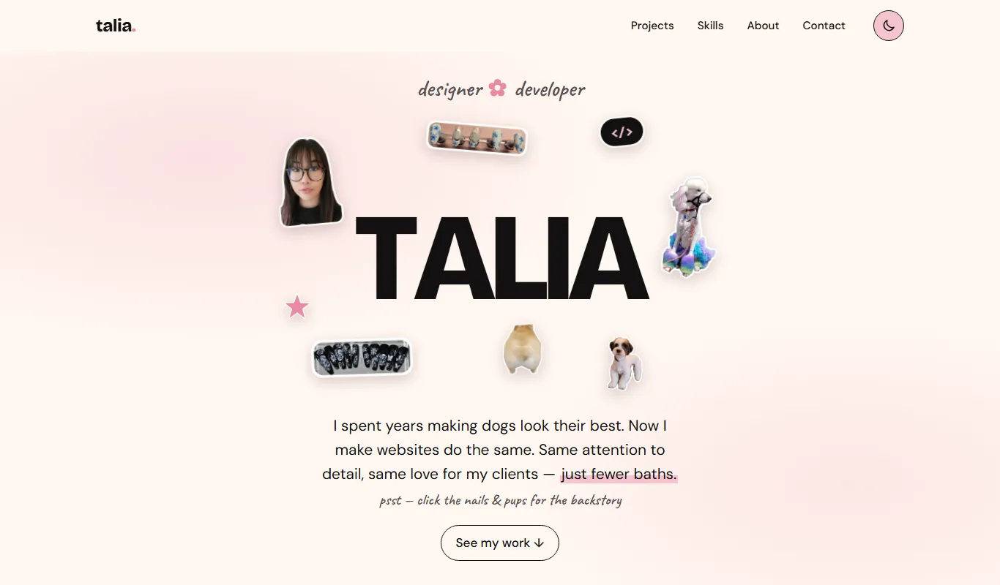
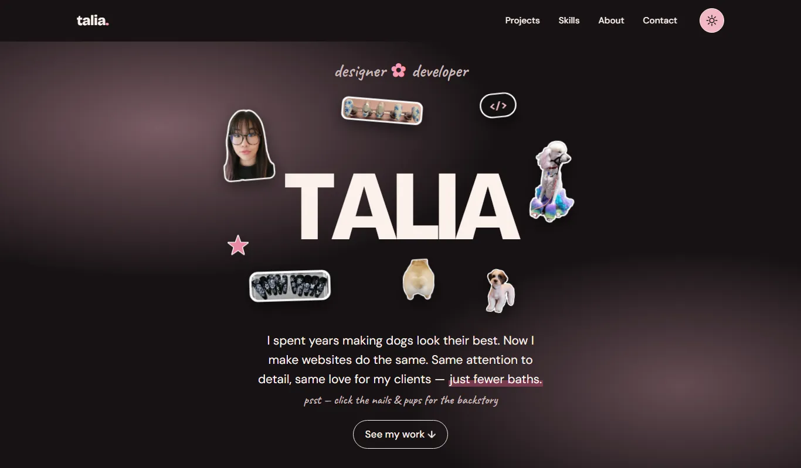
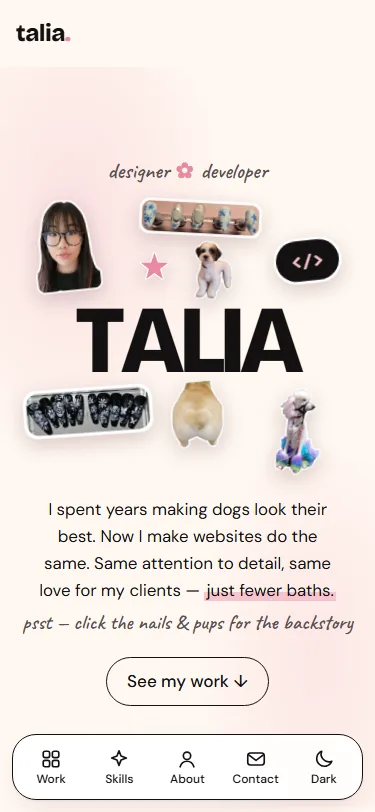

Personal Project · Design & Development
This portfolio
The site you're on: a portfolio that feels as personal as a sticker-covered notebook, built to be fast, accessible and easy to use on any screen.
- Course
- Web Portfolio Projects
- Team
- Solo project
- Built with
- HTML, CSS, JavaScript (no framework)
- Live at
- tahleeuh.com

Overview
I wanted a portfolio that told my career-change story at a glance: years of grooming dogs and designing nail art, now pointed at web design and development. Instead of a standard hero image, my name sits in the middle of the page with photo stickers of my work, my dogs and me floating around it.
Under the playful surface, the goals were practical: show my projects clearly, make my skills and background easy to find, and meet a real standard for accessibility and performance on every screen size.
Design system
Soft pinks on cream with near-black text, and a matching dark mode. Every colour is a CSS variable, so the whole site switches theme by swapping one set of tokens.
-
Cream
#FFF8F1 -
Soft pink
#F6C4CF -
Rose (text)
#B0385C
- TALIABricolage Grotesque · headings
- Soft, thoughtfulDM Sans · body
- psst — hi thereCaveat · handwritten notes


What's inside
-
Floating stickers
Die-cut photo stickers drift gently around my name. The nail and dog stickers link straight to the matching answer in my About section and open it.
-
Thumb-friendly nav
On phones, a bottom navigation bar keeps every section one tap away and highlights the section you're reading.
-
Light & dark
Follows your device's setting by default, with a toggle that remembers your choice and never flashes the wrong theme on load.
-
Adaptive testimonials
Three quotes or fewer show as a grid; four or more become a swipeable carousel with labelled arrow buttons.
-
Drop-down Q&As
My background lives in native disclosure widgets, so the answers work with a keyboard and screen reader, even without JavaScript.
-
Case studies
Every project has its own page with breadcrumbs, real screenshots, and links to the next project.
Accessibility & performance
- ~240 KBfirst load of the home page
- 5.2:1+contrast on all accent text (WCAG AA)
- 44 px+tap targets on phones
- 0frameworks or build steps
- Mobile-first CSS: base styles are for phones, and min-width media queries add the tablet and desktop layouts.
- Optimized images: WebP everywhere, with transparency for the stickers, lazy loading below the fold, and set dimensions so nothing jumps while the page loads.
- Accessible by default: meaningful alt text, visible focus rings, skip link, labelled navigation, and reduced motion for anyone who prefers it.
- Findable: descriptive titles and meta descriptions, link-preview images, canonical URLs and structured data for search engines.
What I learned
Designing my own brand was harder than designing for a client, because there was no brief to check my decisions against. I wanted the site to tell my career-change story without saying "career change" in big letters, so I let the design carry it: my name sits in the middle of the page, surrounded by photo stickers of my nail art, the dogs I've groomed, and me. Every one of those images had to earn its place. The nail and dog stickers link straight to the matching answer in my About section, so the decoration doubles as navigation into my background.
My colour palette taught me the difference between a colour
looking right and a colour working. The soft pink that defines the
brand fails WCAG contrast as text on cream. Instead of dropping
it, I split it into two tokens. The light pink stays for
decoration like bullets, flowers, and quote marks. A deeper rose
(#B0385C, at least 5.2:1) handles every piece of accent text and
every focus ring. Setting up all colours as CSS variables from the
start also meant dark mode came down to swapping one set of
tokens. A small script in the <head> applies
the saved theme before the page paints, so it never flashes the
wrong mode.
Building mobile-first changed how I think about layout. I wrote the base styles for phones and added the tablet and desktop layouts with min-width queries. That forced me to decide what mattered most on a small screen before adding anything else. The bottom thumb navigation came out of that process: on a phone, a top menu is the hardest thing to reach. The stickers were the trickiest part to make responsive. Their positions and sizes are all percentages of the hero, with a separate set of values for phones, so they stay clear of the letters at every width.
I chose plain HTML, CSS and JavaScript with no framework or build
step. After working in React on Polar DB, I wanted to show I
understand what the browser gives you on its own. The FAQ uses
native <details> elements, so it works with a
keyboard and screen reader even without JavaScript. Images are
WebP with set dimensions so nothing jumps while the page loads,
and animations turn off for anyone who has asked their device for
reduced motion. The home page loads in about 240 KB.
Next, I will be adding new case studies as I finish projects, starting with my capstone.